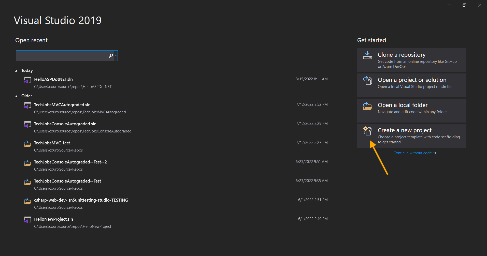
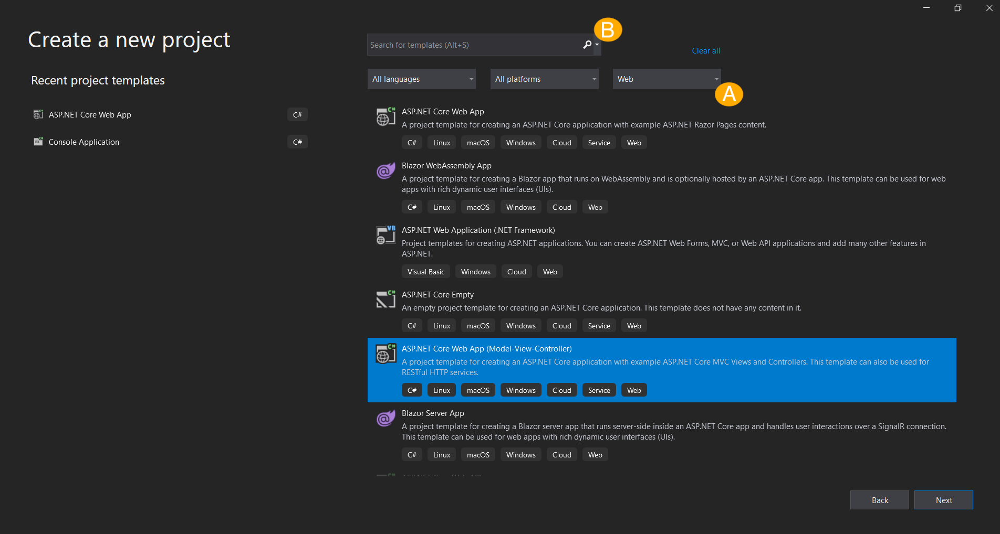
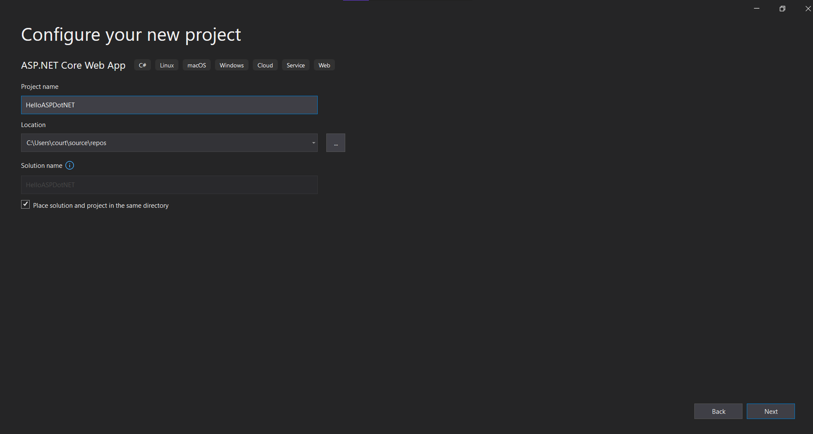
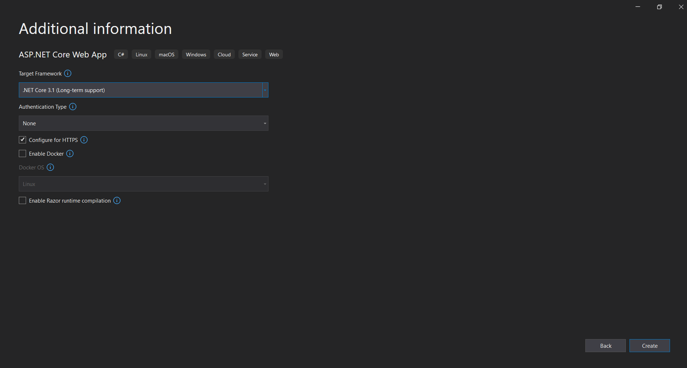
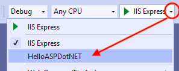

9.2. Create a New ASP.NET Project
ASP.NET is a framework in the .NET Core family that is used to build web applications. While ASP.NET can be used to build a wide variety of web applications, we will be focusing on using it to build MVC web applications.
9.2.1. Getting Started
To create a new ASP.NET MVC project, start a new project in Visual Studio.
Windows Users:
Use the Get started Menu to Create a new project.
User selects “Create a new project”.
When selecting the type of project, select ASP.NET Core Web App (Model-View-Controller).
- There are 2 ways to find this easily:
Select “Web” from the dropdown menu.
Use the search bar.
Once you have your project type, click Next.
User selects “ASP.NET Core Web App (Model-View-Controller)” by using option A’s dropdown menu.
Name your project
HelloASPDotNETand put it in the appropriate directory for all of your classwork. Hit Next.User names project and selects location for repo.
Select the Framework. We are going to use .NET Core 3.1 (Long-term support). We are using this version because it is stable for creating the projects in this textbook. You do not need to adjust any other options at this point. Select Create!

All Users:
Visual Studio creates a fully-functional web application for you.
Now launch the application!
Mac Users: Click Run.
Windows Users: Try clicking IIS Express first. If this results in an
HTTP Error 500.0, use the dropdown arrow next to IIS Express. SelectHelloAspDotNet(or whatever you named your project) and try launching the application again.
Select
HelloAspDotNetas an alternative.Eventually, your browser will open and display your application. Take note of the port number in the address bar.

Taking note of the port number used by the server
Note
The home page of your application already contains a link to a tutorial from Microsoft on how to use ASP.NET MVC. If you want extra study materials, check out that tutorial from the home page Microsoft designed!
In the Controllers directory, check out HomeController.cs.
Microsoft provided the code in HomeController and that is why our application ran immediately after we created it and was full of content.
As we work on our new application, we will be adding a new controller, HelloController.
Note
As you code along with the videos, you will be working on your own project.
However, should you want to review a step or double-check your code, fork LaunchCode’s HelloASPDotNETDemo repository to see what the code looked like at each stage.
The repository is up on Github.
The master branch contains the code after creation and also shows the starting point for the next chapter.
9.2.2. Check Your Understanding
Question
True/False: You should take note of the port number the server is using to run your application.
True
False